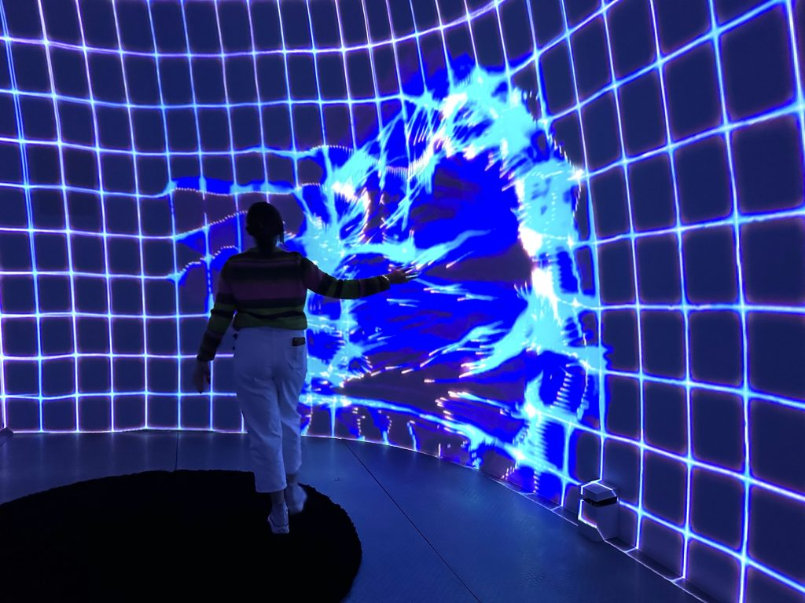

Overview
After reading “SENSE AND INTERACTIVITY Bodily Participation and Exclusionary Politic”, I have learned about the importance of visual culture and touch in interactive art, especially their roles in subverting traditional concepts and social-cultural structures. Through case studies, including the works of artists such as VALIE EXPORT, David Rokeby, and Masaki Fujihata, I have understood how multi-sensory interaction can reconfigure the experience and participation methods in artistic expression.

I feel that in modern culture, the dominant position of vision is particularly prominent, especially in film and media, which mainly present realism through visual and auditory means. Through learning, I realized that this restricts the expression of other senses to a certain extent. Interactive art shows great potential in reconfiguring this sensory hierarchy. For example, the tactile interactive works of VALIE EXPORT and Lynn Hershman Leeson use touch to challenge the traditional dominance of vision, making me realize that interactive art can break the single sensory experience. In VALIE EXPORT’s work, tactile interaction brings a confrontational force, making the user not only a spectator but also a part of the work. This makes me start to think about how to apply touch in future projects so that users can have a deeper sense of participation in the experience.
The status of sound in interactive media is usually underestimated, but I have felt the profound influence of sound on interactive design in David Rokeby’s “Very Nervous System”. This work makes the audience feel that their body movements directly affect the surrounding environment through the interaction of sound and body movement. Rokeby’s work makes me realize that sound can not only be a background but also the core of interaction. I can consider how to make sound an active experience element in future projects to enhance the depth and personalization of interaction.
Although smell and taste are less applied in interactive media, they play unique roles in some art projects. For example, Paul Vanouse’s “Labor” guides the audience to think about environmental issues through the expression of smell. This makes me realise that the unique role of smell and taste is that they can trigger immediate emotions and unconscious memories, making the interactive experience more immersive. In future designs, if these senses can be combined, it will provide users with richer emotional experiences and cultural resonances.
To sum up, through the combination of vision, touch, sound, smell, and taste, interactive art can break the traditional sensory hierarchy and provide the audience with a more comprehensive experience. This makes me realize that in future designs, I can break the limitations of a single sense and try to combine multiple senses, thus bringing stronger immersion and memory points. Because through multi-sensory experiences, we can more directly access the perspectives and experiences of others and then generate emotional resonances. This interactive design method makes me realize that in creative computing projects, multi-sensory interaction can be used to make users feel experiences other than their own, to achieve the effects of education, inspiration, and emotional touch.